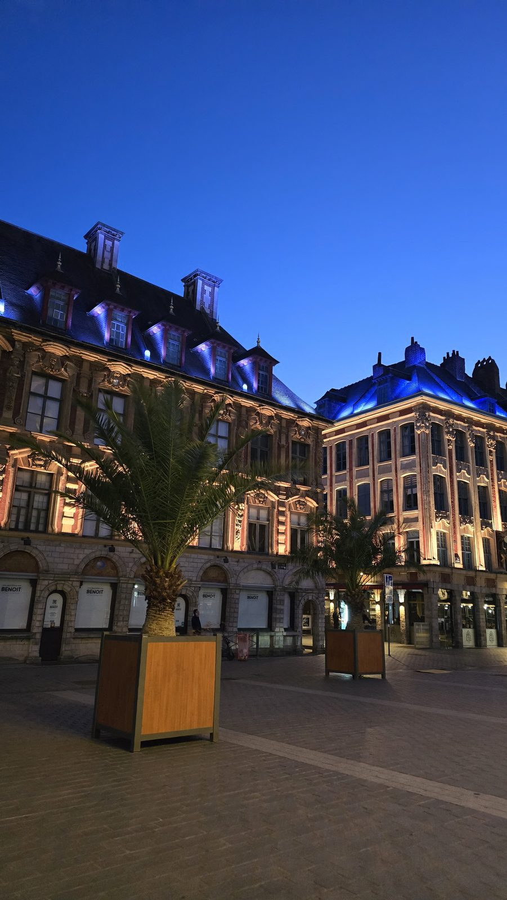

Places to See in Lille
Lille is an easy walking city — the essentials all sit within about half an hour on foot of each other. Here's what to prioritise, from the best-known to the quieter finds.
Vieux-Lille and the Grand'Place
The natural starting point: the Grand'Place (officially place du Général-de-Gaulle) with the Vieille Bourse and its Flemish arcades, then the cobbled streets of rue de la Monnaie lined with 17th-century stepped-gable façades. It's the most photogenic part of the city, best explored with no fixed route.

The Belfry of the Town Hall
At 104 metres, it's the tallest belfry in the region — the climb gives an open view over the brick rooftops and, on a clear day, as far as Belgium. Access is by guided tour at set times, so it's worth checking the day's schedule on arrival.
The Palais des Beaux-Arts
One of the largest museums in France outside Paris, with collections ranging from Rubens and Goya to Impressionism, plus an exceptional collection of scale models of fortified towns. Give it a good hour and a half if you don't want to rush it.
The Citadelle de Lille and its park
This star-shaped fortress, built by Vauban in the 17th century, is still an active military site and only partly open to visitors — but the surrounding park, the largest green space in the city, is open year-round for a walk or a picnic, with a free zoo nearby.
Notre-Dame-de-la-Treille cathedral
A resolutely modern cathedral: its translucent marble façade, only completed in 1999 after more than a century of construction, lets in a distinctive light inside. An interesting contrast right next to the classic façades of Vieux-Lille.
Practical tips
- Getting around
- Everything is walkable from the centre; metro lines 1 and 2 cover the outer stretches if needed
- Budget
- The streets and parks are free; expect an entry fee for the Palais des Beaux-Arts and the Belfry climb
- Best time
- Early morning in Vieux-Lille to beat the crowds, especially on weekends